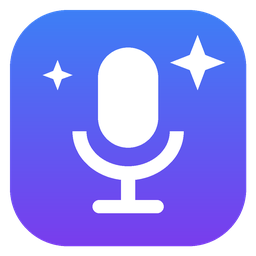

Политика конфиденциальности
AI Meeting Assistant · действует с 10 октября 2026 г.
AI Meeting Assistant — это программа для Windows. Она записывает онлайн-встречи пользователя, расшифровывает их, составляет резюме и сохраняет результаты на Google Диск пользователя.
Какие данные обрабатываются
- Аудиозаписи встреч, расшифровки и резюме. Создаются и хранятся на компьютере пользователя.
- Доступ к Google Диску. Программа запрашивает только ограниченный доступ
drive.file: она может создавать файлы и работать лишь с теми файлами и папками, которые создала сама. Остальное содержимое Диска программе недоступно. - Ключ OpenAI и токен доступа Google. Хранятся только на компьютере пользователя, в зашифрованном виде (Windows DPAPI).
Куда передаются данные
- OpenAI. Аудио и текст встречи отправляются в OpenAI для расшифровки и составления резюме. Используется ключ API пользователя, применяются правила OpenAI.
- Google Диск пользователя. Туда загружаются запись и документ с резюме.
- Больше никуда. У разработчика программы нет серверов: он не получает и не хранит никакие данные пользователей.
Использование данных Google
Данные, полученные через API Google, используются только для того, чтобы сохранять файлы встреч на Диск пользователя. Они не передаются третьим лицам, не используются для рекламы и не используются для обучения моделей. Использование соответствует Google API Services User Data Policy, включая требования Limited Use.
Удаление данных
- Пользователь может в любой момент отключить Google-аккаунт в настройках программы или на странице myaccount.google.com/permissions.
- Удаление программы стирает её настройки и токены. Записи встреч остаются в папке «Документы\AI Встречи» и на Google Диске, пользователь может удалить их сам.
Контакты
По вопросам конфиденциальности: yourumka@gmail.com.
Privacy Policy (English)
AI Meeting Assistant is a Windows desktop app that records the user's online meetings, transcribes and summarizes them, and saves the results to the user's own Google Drive.
- Google user data. The app requests only the
drive.filescope. It can access only files and folders it created itself. Google user data is used solely to save meeting files to the user's Drive. It is never shared with third parties, never used for advertising and never used to train models, in line with the Google API Services User Data Policy, including the Limited Use requirements. - OpenAI. Meeting audio and text are sent to OpenAI for transcription and summarization, using the user's own API key.
- Storage. Recordings, transcripts and credentials are stored locally on the user's computer. Credentials are encrypted with Windows DPAPI.
- No developer servers. The developer operates no servers and does not collect or store any user data.
- Revoking access. Users can revoke access at any time in the app settings or at myaccount.google.com/permissions.
- Contact: yourumka@gmail.com